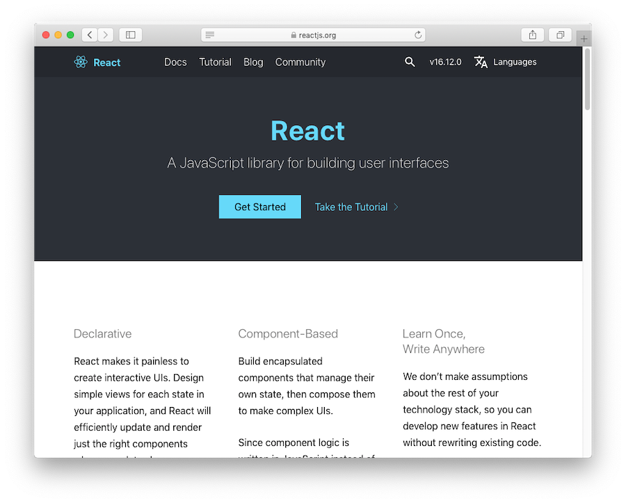

-- trabe # Trabe -- who-we-are * Asís García * [asis@trabe.io](mailto:asis@trabe.io) * [@asischao](https://twitter.com/asischao) * David Barral * [david@trabe.io](mailto:david@trabe.io) * [@davidbarral](https://twitter.com/davidbarral) -- section # Taking cues<br/>from React ## <span class="hide">A story about "stealing" design ideas from great Open Source projects</span> -- section # Taking cues<br/>from React ## A story about "stealing" design ideas from great Open Source projects -- toc # Two parts 1. What's React and why it's great 1. Building a microservices framework using cues from React -- section # What's React and<br/>why it's great --  -- # UI library ## Just the UI. -- # Declarative ## You tell React what to render. React deals with the details. -- # Component-Based ## Everything is a Component. From the app to a single icon. -- # Learn once... ## ...write anywhere. ## <span class="hide"> ...~~run anywhere~~.</hide> -- # Learn once... ## ...write anywhere. ## ...~~run anywhere~~. -- code # Hello React ```javascript const application = ( <h1 title="Hi!"> Hello world </h1> ); const container = document.getElementById("root"); ReactDOM.render(application, container); ``` -- code threeway threeway-1 ```javascript // JSX <h1 title="Hi!"> Hello world </h1> ``` ```javascript // Transpiled React.createElement( "h1", { title: "Hi!" }, "Hello world" ) ``` ```javascript // Runtime: a React element { type: "h1", props: { title: "Hi!", children: "Hello world", }, } ``` -- code threeway threeway-2 ```javascript // JSX <h1 title="Hi!"> Hello world </h1> ``` ```javascript // Transpiled React.createElement( "h1", { title: "Hi!" }, "Hello world" ) ``` ```javascript // Runtime: a React element { type: "h1", props: { title: "Hi!", children: "Hello world", }, } ``` -- code threeway threeway-3 ```javascript // JSX <h1 title="Hi!"> Hello world </h1> ``` ```javascript // Transpiled React.createElement( "h1", { title: "Hi!" }, "Hello world" ) ``` ```javascript // Runtime: a React element { type: "h1", props: { title: "Hi!", children: "Hello world", }, } ``` -- code # Anatomy of a React element ```javascript { type: "h1", // Component props: { title: "Hi!", // "Attributes" children: "Hello world", // "Nested" stuff }, } ``` -- code # React rendering (ultra-oversimplified ^_^U) ```javascript // ReactDOM.render(application, container); function render(element, container) { const node = document.createElement(element.type); node.title = element.props.title; node.innerText = element.children; container.appendChild(node); } ``` -- # Host Components ## Building blocks. ## Platform specific. ## DOM: div, span, h1, a, etc. -- # Composite Components ## Abstraction. ## Code reuse. ## a.k.a Custom Components. -- code # Composite Components: abstraction & code reuse ```javascript // This is a Component function HelloWorld(props) { return <h1 title={props.title}>Hello world</h1>; } ``` -- code # Composite Components: abstraction & code reuse ```javascript // This is a Component function HelloWorld(props) { return <h1 title={props.title}>Hello world</h1>; } const application = ( <div> <HelloWorld title="Hi"/> <HelloWorld title="there!" /> </div> ); const container = document.getElementById("root"); ReactDOM.render(application, container); ``` -- code # Composite Components: composition ```javascript // This is a Component function Heading(props) { return <h1 title={props.title}>{props.children}</h1>; }; ``` -- code # Composite Components: composition ```javascript // This is a Component function Heading(props) { return <h1 title={props.title}>{props.children}</h1>; }; // This is another Component function NiceText(props) { return <span>🌻{props.children}🌻</span>; }; ``` -- code # Composite Components: composition ```javascript // This is a Component function Heading(props) { return <h1 title={props.title}>{props.children}</h1>; }; // This is another Component function NiceText(props) { return <span>🌻{props.children}🌻</span>; }; // Even the app is a Component! function Application() { return ( <Heading title="So nice!"> <NiceText>Hello world</NiceText> </Heading> ); }; ``` -- code # Composite Components: composition ```javascript // This is a Component function Heading(props) { return <h1 title={props.title}>{props.children}</h1>; }; // This is another Component function NiceText(props) { return <span>🌻{props.children}🌻</span>; }; // Even the app is a Component! function Application() { return ( <Heading title="So nice!"> <NiceText>Hello world</NiceText> </Heading> ); }; const container = document.getElementById("root"); ReactDOM.render(<Application />, container); ``` -- code ```javascript render({ type: Application, }); ``` -- code ```javascript render({ type: Heading, props: { title: "So nice!", children: { type: NiceText, props: { children: "Hello world", }, } }, }) ``` -- code ```javascript render({ type: Heading, props: { title: "So nice!", children: { type: "span" props: { children: "🌻Hello world🌻", }, } }, }) ``` -- code ```javascript render({ type: "h1", props: { title: "So nice!", children: { type: "span" props: { children: "🌻Hello world🌻", }, } }, }) ``` -- trabe-green # React key points -- # Components everywhere You use the same abstraction to build every aspect of your application. -- # Simple yet powerful A Component is a function accepting props and returning elements. -- # It's declarative You describe the UI and React renders it. You handle React an element. It's up to React to render the UI. -- quote "You handle React an element. It's up to React to render the UI." -- quote "You handle React an element. It's up to React to render the UI." <div class="wait">🤔</div> -- quote "You handle React an element. It's up to React to render the UI." <div class="wait wait-big">🤔</div> -- quote "You handle React an element. It's up to React to render the UI." <div class="wait wait-huge">🤔</div> -- quote "You handle React an element. It's up to React to render the UI." <div class="wait wait-humongous">😬</div> -- # Host agnosticism Same principles, different renderers * ReactDOM * ReactNative * Ink * <span class="hide">Custom renderer 🤔</span> -- # Host agnosticism Same principles, different renderers * ReactDOM * ReactNative * Ink * Custom renderer 🤨 -- # All you need to know * https://reactjs.org -- # The magic behind<br/> the curtain * https://pomb.us/build-your-own-react/ -- section # Building a microservices framework<br/> using cues from React -- # The problem * Build Node.js REST microservices. * Fast development cycle. * Support common infraestructure (log, tracing, metrics, etc). -- # Koa.js primer ## In roughly 5 minutes -- quote >Next generation web framework for node.js ><cite>[https://koajs.com](https://koajs.com)</cite> -- # An example * <small>[Use case]</small> Fetch from a REST endpoint * <small>[Use case]</small> Filter the active items * <small>[Use case]</small> Return the data * <small>[Cross stuff]</small> Log the request -- code code-small # An example ```javascript const Koa = require("koa"); const app = new Koa(); // Log request app.use(async (ctx, next) => { const start = new Date().getTime(); console.log("Request start"); await next(); const t = new Date().getTime() - start; console.log("Request end", t , "ms"); }; // Fetch, filter, return response app.use(async ctx => { const res = await fetch("http://api.com/data"); const json = await res.json(); const data = json.filter(item => item.active); ctx.status = 200; ctx.body = data; }); app.listen(3000); ``` -- # Takeaways * Small API: `async (ctx,next) => {}` * Just JS * Everything is a middleware * Composable * Simple and elegant -- # An example - Take 2 * <small>[cross stuff]</small> Request id * <small>[cross stuff]</small> Propagate request id * <small>[cross stuff]</small> Handle errors -- code code-eagle-eye # An example - Take 2 <pre class="koa"> const Koa = require("koa"); const uuid = require("uuid"); const app = new Koa(); <span class="comment">// Request id</span> app.use(async (ctx, next) => { ctx.state.requestId = uuid(); await next(); }); <span class="comment">// Log request</span> app.use(async (ctx, next) => { const start = new Date().getTime(); console.log("Request start"); await next(); const t = new Date().getTime() - start; console.log("Request end", t , "ms"); }; <span class="comment">// Handle errors</span> app.use(async (ctx, next) => { try { await next(); } catch(e) { ctx.status = 500; } }); <span class="comment">// Fetch, filter, return response</span> app.use(async ctx => { const res = await fetch("http://api.com/data", { <span class="comment">// Propagate id</span> headers: { "x-request-id": ctx.state.requestId, } }); const json = await res.json(); const data = json.filter(item => item.active); ctx.status = 200; ctx.body = data; }); app.listen(3000) </pre> -- code code-eagle-eye # An example - Take 2 <pre class="koa"> const Koa = require("koa"); const uuid = require("uuid"); const app = new Koa(); <span class="comment">// Request id</span> app.use(async (ctx, next) => { ctx.state.requestId = uuid(); await next(); }); <span class="comment">// Log request</span> app.use(async (ctx, next) => { const start = new Date().getTime(); console.log("Request start"); await next(); const t = new Date().getTime() - start; console.log("Request end", t , "ms"); }; <span class="comment">// Handle errors</span> app.use(async (ctx, next) => { try { await next(); } catch(e) { ctx.status = 500; } }); <span class="comment">// Fetch, filter, return response</span> app.use(async ctx => { const res = await <span class="hl">fetch("http://api.com/data"</span>, { <span class="comment">// Propagate id</span> headers: { "x-request-id": ctx.state.requestId, } }); const json = <span class="hl">await res.json();</span> const data = <span class="hl">json.filter(item => item.active);</span> ctx.status = 200; <span class="hl">ctx.body = data;</span> }); app.listen(3000) </pre> -- # Solution ## "React for microservices" ## Just declare the use case ## Framework handles boilerplate ## Sane defaults with opt out -- code # Possible JSX syntax ```javascript ReactMicroservices.render( <Service port={3000}> <LogRequest /> <ErrorHandler status={500} /> <FetchJson url="http://api.com/data" /> <Filter fn={item => item.active} /> <SendData /> </Service> ); ``` -- code # Real syntax: fluid DSL ```javascript service() .use(logRequest()) .use(fetchJson("http://api.com/data")) .use(filter(item => item.active)); .use(sendData()) .listen(3000) ``` -- code # An example - Take 3 ```javascript service() .use(tracing()) .use(metrics()) .use(logRequest()) .use(router() .get("/endoint", parallel( pipe( fetchJson("http://api.com/data1"), filter(item => item.active)) ), fetchJson("http://api.com/data2"), ), transform(([data1, data2] => ({ data1, data2 })) sendData() ) ) .listen(3000); ``` -- code # Nothing changes ```javascript ReactMicroservices.render( <Service port={3000}> <Tracing /> <Metrics /> <LogRequest /> <Router> <Get match="/endpoint"> <Parallel> <Pipe> <FetchJson url="http://api.com/data1" /> <Filter fn={item => item.active} /> </Pipe> <FetchJson url="http://api.com/data2" /> </Parallel> <Transform fn={([data1,data2] => ({ data1, data2 })} /> <SendData /> </Get> </Router> </Service> ); ``` -- # Parallelism <table class="comparisson"> <thead> <tr> <th></th><th>React</th><th>Microservices</th> </tr> </thead> <tbody> <tr> <th>Definition</th><td><Jsx /></td><td>Fluid JS DSL</td> </tr> <tr> <th>Component</th><td>function</td><td>function</td> </tr> <tr> <th>Element</th><td>{type,props}</td><td>{type,props}</td> </tr> <tr> <th>Host node</th><td>DOM</td><td>Koa, async function</td> </tr> <tr> <th>Renderer</th><td>ReactDOM</td><td>Custom builders</td> </tr> </tbody> </table> -- code code-small threeway threeway-1 ```javascript service() .use(status(404)) .listen(3000); ``` ```javascript { type: "service", props: { children: [ { type: "status", props: { code: 404, }, }, ], }, } ``` ```javascript const app = new Koa(); app.use( async ctx => { ctx.status = 404; }); app.listen(3000); ``` -- code code-small threeway threeway-2 ```javascript service() .use(status(404)) .listen(3000); ``` ```javascript { type: "service", props: { children: [ { type: "status", props: { code: 404, }, }, ], }, } ``` ```javascript const app = new Koa(); app.use( async ctx => { ctx.status = 404; }); app.listen(3000); ``` -- code code-small threeway threeway-3 ```javascript service() .use(status(404)) .listen(3000); ``` ```javascript { type: "service", props: { children: [ { type: "status", props: { code: 404, }, }, ], }, } ``` ```javascript const app = new Koa(); app.use( async ctx => { ctx.status = 404; }); app.listen(3000); ``` -- code # For this service... ```javascript service() .use(fetchJson("http://api.com/data")) .use(sendData()) .listen(3000); ``` -- code # ...using these components... ```javascript const sendData = () => component("SEND_DATA", {}); const fetchJson = (url) => component("FETCH_JSON", { url }); const service = () => component("SERVICE", { children: [] }) .addDSLMethods({ use: element => layer => { element.props.children.push(layer); }, listen: element => port => { build(element).listen(port); } }); ``` -- code # ...generates this element ```javascript { type: "SERVICE", props: { children: [ { type: "FETCH_JSON", props: { url: "http://api.com/data" } }, { type: "SEND_DATA", props: {}, } ] } } ``` -- code code-small # Using this builders... ```javascript const builders = { "SERVICE": (element, build) => { const app = new Koa(); element.props.children .map(children => build(children)) .forEach(fn => app.use(fn)); return app; }, "FETCH_JSON": (element, build) => async (ctx, next) => { const res = await fetch(element.url); const json = await res.json(); ctx.state.data = json; await nex(); }, "SEND_DATA": (element, build) => async (ctx, next) => { ctx.status = 200; ctx.body = ctx.state.data; await next(); }, }; ``` -- code # ...we get this Koa.js service ``` const app = new Koa(); app.use(async (ctx, next) => { const res = await fetch("http://api.com/data"); const json = await res.json(); ctx.state.data = json; await nex(); } app.use(async (ctx, next) => { ctx.status = 200; ctx.body = ctx.state.data; await next(); }); app.listen(3000); ``` -- # Design validation ## Does it hold? -- # Enter the miniservice ## Serve both REST and GRPC endpoints [Koa.js](https://koajs.com/) and [Mali.js](https://mali.js.org/) -- code <pre class="koa"> service() .use(logRequest()) .use(router() .get("/endoint", /* ... */) ) .listen(3000) </pre> -- code <pre class="koa"> <span class="hl">http()</span> .use(logRequest()) .use(router() .get("/endoint", /* ... */) ) .listen(3000) </pre> -- code <pre class="koa"> <span class="hl">service()</span> <span class="hl">.connect(</span> http()</span> .use(logRequest()) .use(router() .get("/endoint", /* ... */) ) .listen(3000), <span class="hl">);</span> </pre> -- code <pre class="koa"> service() .connect( http() .use(logRequest()) .use(router() .get("/endoint", /* ... */) ) .listen(3000), ) <span class="hl">.connect(</span> <span class="hl">grpc(proto)</span> <span class="hl">.rpc("/op", /* ... */)</span> <span class="hl">.listen(3100),</span> <span class="hl">);</span> </pre> -- code <pre class="koa"> service() .connect( http() <span class="hl">.use(logRequest())</span> .use(router() .get("/endoint", /* ... */) ) .listen(3000), ) .connect( grpc(proto) <span class="hl">.use(logRequest())</span> .rpc("/op", /* ... */) .listen(3040), ); </pre> -- # Abstraction works ## Component → element → builders ## One element, many builders 🤓 -- # Summing up * Components, elements and builders (the cue from React) * Framework to define request-response pipelines (also a cue from Koa) -- section # Parting note -- # "Profit" from OSS * Good design * Community-driven documentation * Public source code (the one source of truth) -- # Q&A ## Ask about anything related to software or Trabe -- # Cheers! <img src="https://media.giphy.com/media/Zw3oBUuOlDJ3W/giphy.gif" style="height: 50vh" />